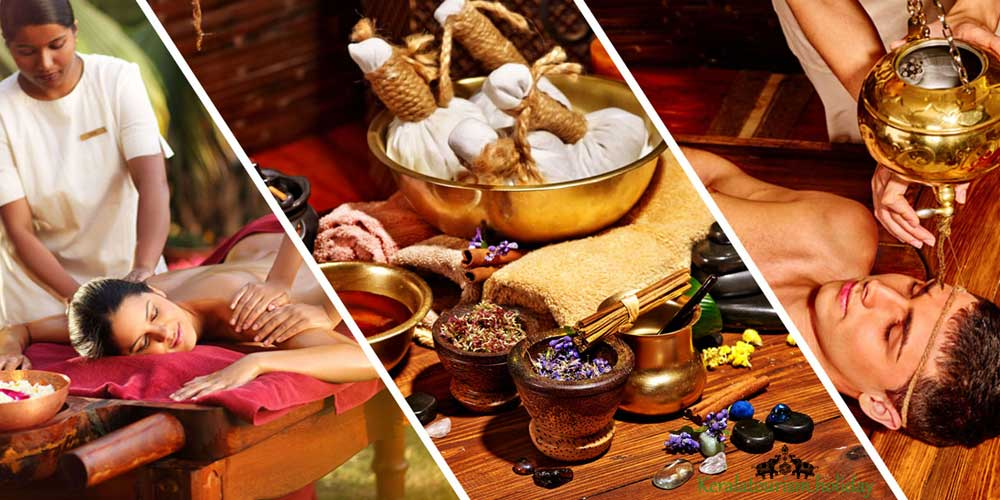
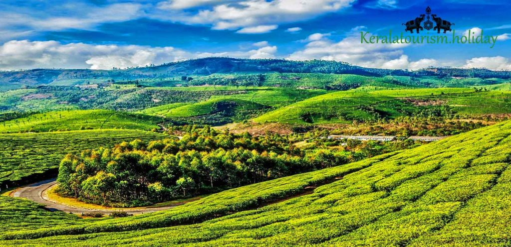
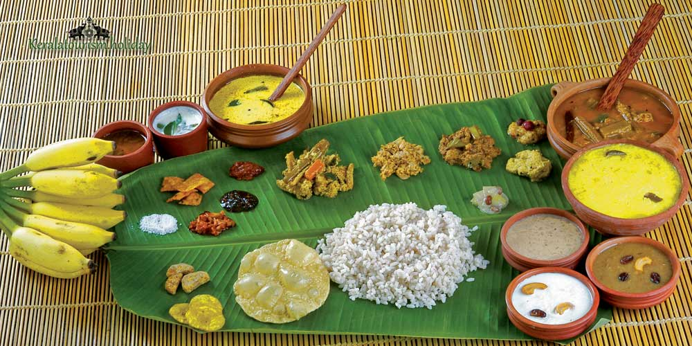
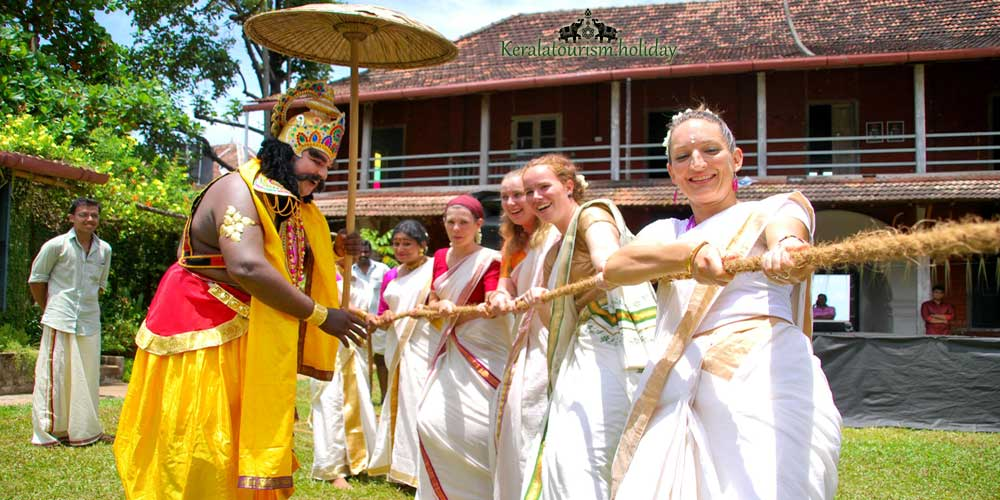
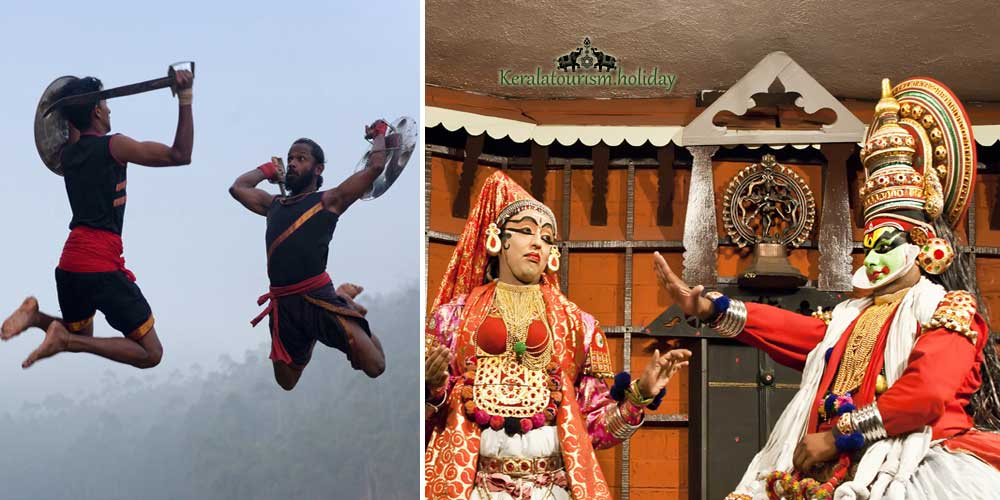

Kerala at a Glance

Have you planned your upcoming holidays to be spent in the most wondrous location in India and you want it to be an experience for lifetime? Then, the ideal choice must be the God’s own country. Kerala, with its astounding beauty of nature is a treasure trove for the global travellers. Kerala is gliding the curtain of its splendour with the sun kissed beaches, lush green meadows, gleaming backwaters, where the tourists are lured to visit the South Indian state.
Kerala is home to variety of landscapes spread across the regions. Hill stations attracting the natives and tourists alike, paddy fields signifying the importance of farming, vast tea and spice plantations where you can have a peaceful time around, shallow backwaters with houseboats floating across, beaches with people involved in water sporting activities, temples with unique cultures and rituals, remnants of the Dutch and British colonization in the form of elegantly designed forts and churches are the major attractions of Kerala. Unlike the other neighbouring states, every house in Kerala is surrounded by trees and plants and they have a habit of preserving the nature and living close to nature. It is very common to see people living along the banks of the backwater and use the country boats as the public transport system to commute to schools, shops and offices. Kerala gives you a unique experience every time you visit this wonderful state.
Kerala is most popular among the natives as well as the travellers for the Ayurvedic centres dotted across the state. Originated in India, Ayurveda is the pioneer in treating the diseases of mankind. Ayurveda aims at finding the root cause of a disease and curing it. Preventive medicine is most popular in Ayurveda.
Detoxing, rejuvenations are the highlights of Ayurveda. You have plenty of options to choose from the list of treatments and centres offering the treatments. Ayurveda is unlike the other forms of medications, is focused on bringing the body,mind and soul in a linear pattern for a healthy and happy life. Plan to get yourself rejuvenated with the wonderful healing techniques of Ayurveda.
Have a look at the plains from the hills atop and relish the beauty of the greens covering the surface as a blanket. The most popular hill stations in Kerala are Munnar, Vagamon, Vythiri, Idukki are some of the popular hill stations in Kerala. Out of all, Munnar is the most sought out hill station, attracting thousands of tourists every year. The travel from the foot of the hill to Munnar is an exotic experience witnessing the water falls and the misty clouds on both sides.
The panoramic view from the top of the hills is an enchanting one. Vagamon, a quiet offbeat hill station, has an overtone of green around, comparatively less explored hill station, becoming popular for its untouched beauty in the recent times. You have lot more to explore across the hilly regions of Kerala, an undoubtedly unique experience.

Houseboats and Alleppey are the popular icons of Kerala. The alluring backwaters tempt you to stay in the houseboats, relishing the beauty of the gleaming shallow surface. The houseboats with the aesthetic interiors, freshly cooked Kerala cuisines served on board, all make your time in the houseboats, the most enchanting one. You can also spend some time with the native residents along the banks. Get to know about their lifestyles at all stages intertwined with those backwaters.
Kovalam is the most popular beach destination in Kerala, charming you beyond your imaginations. The beautiful beaches with its long coast lines and sandy shores are the ideal places for you to experience the solitude amidst the serenity. Kerala offers you the most azure beaches where you can find solace with the music of gushing winds and uninterrupted waves at the background. Varkala is an important beach destination in Kerala, which definitely surpasses your expectations. The less crowded seashore lets you immerse yourself in the beauty of the cliffs and the alluring water in front of you. Kochi, the major trading port and a beautiful harbour is an icon of the state with its Chinese fishing nets and Jewish Synagogues. You have umpteen options to enjoy every moment of your visit to any of these beaches in the most ecstatic manner.
Onam is the most important and the grandest festival of Kerala, symbolising the homecoming of King Mahabali. He is welcomed with the beautiful rangolis and grand feasts. Onam Sadya is the delicious lunch with at least 30 varieties of dishes. People of Kerala are diasporic, and Onam Sadya is a popular feast in almost all the countries.
Besides, boat races and other smaller festivals make Kerala very lively round the year. Don’t forget to enjoy the art shows during your trip to Kerala. Kathakali, the iconic art form of Kerala mesmerizes you when the artistes perform the scenes from the Hindu epics like Mahabaratha in a dance – drama pattern. The time taken to put on the make-up, the female characters are always played by men and no woman does this show, are the additional information surprising us.
Kerala is a state rich in heritage, culture, tradition, cuisines and festivals offering something to every tourist visiting her. With this brief backdrop, you can plan a vacation to the God’s Own country to relish the quintessence of nature embracing Kerala!
Places To Visit